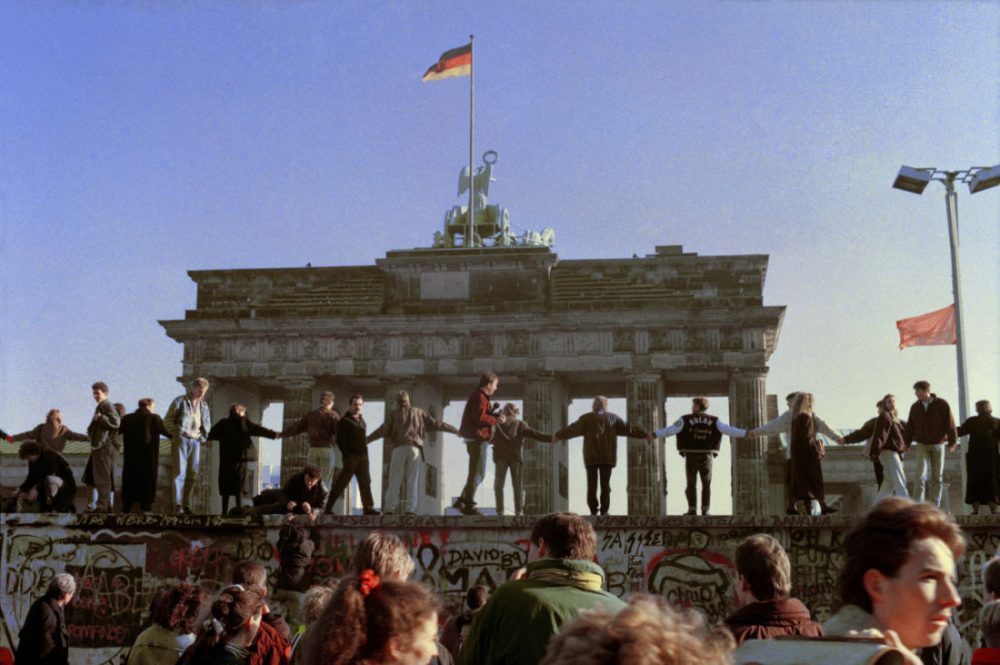

Căderea
Noul guvern al Germaniei Răsăritene din 1989 a hotărât să permită est-berlinezilor să primească vize pentru a vizita Germania Occidentală. Günter Schabowski, ministrul german al propagandei, a avut sarcina să anunțe această hotărâre. El fusese în vacanță, cu ceva timp mai înainte, și nu a fost nici un moment foarte familiarizat cu noile prevederi.
La scurtă vreme după conferința de presă din 9 noiembrie 1989 , ministrului i-a fost înmânată o notă care se spunea că le este permisă trecerea graniței est-berlinezilor, dacă au viza legală, dar nu i-au fost date instrucțiuni mai detaliate.
În mod normal, ar fi trebuit să treacă câteva zile până când să fie conceput un nou regulament care să fie, de asemenea, transmis trupelor de grăniceri. Schabowski nu a fost însă informat asupra acestor amănunte și, după citirea sus-numitei note la conferința de presă, atunci când a fost întrebat când va intra în vigoare noile prevederi, el a răspuns:
După câte știu eu, intră în vigoare imediat, chiar acum.
Zeci de mii de est-berlinezi au auzit în direct declarația lui Schabowski la televiziunea est-germană și au luat cu asalt toate punctele de control, pretinzând să intre neopriți în Berlinul Occidental. Grănicerii, depășiți numeric și nedumeriți, au deschis barierele punctelor de trecere, lăsând mulțimea să treacă după un control sumar sau chiar fără de nicio formalitate.
